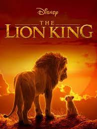
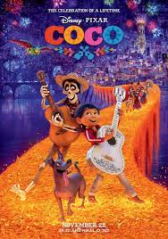
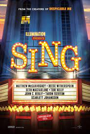
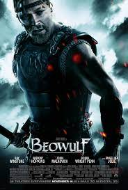

- Spirited Away is regarded by many as the greatest animated film of all time. It won the Academy Award for Best Animated Feature at the 75th Academy Awards, making it the first, and to date only, hand-drawn and non-English-language animated film to win the award.

- There are a lot of reasons why "The Lion King" is beloved, and much of it has to do with the movie's superb story. Heavily influenced by Shakespeare's "Hamlet," the story of Simba and his family is full of all the delicious, juicy plot details audiences love.

- Disney Pixar's Coco follows the journey of young Miguel to find his great-great grandfather in the Land of the Dead. Coco provides us with a strong reminder that despite death, family history can transcend the years and continue to shape our families for generations to come.

- Sing is a 2020 American 3D computer-animated musical comedy film produced by LuKain Animation, Walt Disney Pictures, Universal Pictures and Distributed by Walt Disney Studios with Universal Pictures Distribution.

- It takes a while for your eyes to get used to the uncanny animation, but once you overcome the ordeal, Beowulf turns into an outrageously entertaining ride. The performances are solid, the visuals are unique, the score is uplifting, and it has great action sequences.